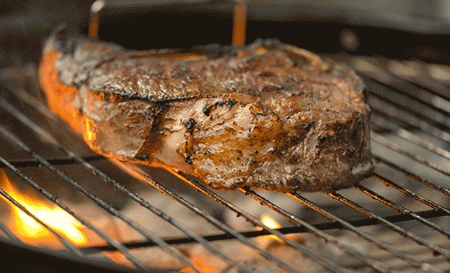

Beef Steak
It's savory (never disappoints)

Description
A beef steak is a timeless dish, featuring a tender cut of beef seasoned and seared to perfection. Whether it's a ribeye, sirloin, or filet mignon, a well-cooked steak is a culinary delight that satisfies meat lovers around the world. The sizzle of the steak on the grill, the aroma of spices, and the juicy tenderness of each bite make it a quintessential indulgence for any occasion.
VVV ALSO, YOU WHEN YOU EAT THIS VVV

Ingredients
- Beef steak (ribeye, sirloin, filet mignon, etc.)
- Salt and pepper (for seasoning)
- Olive oil or butter (for searing)
- Garlic cloves (optional, for added flavor)
- Herbs (such as rosemary or thyme, optional)
- Steak sauce or chimichurri (for serving, optional)
How do you make this?
Follow these steps
- Season the Steak: Generously season both sides of the beef steak with salt and pepper.
- Preheat the Pan: Heat a skillet or grill pan over medium-high heat. Add olive oil or butter.
- Sear the Steak: Place the seasoned steak onto the hot pan. Sear each side for a few minutes until a golden-brown crust forms.
- Add Flavor (Optional): Add crushed garlic cloves and herbs to the pan for extra flavor.
- Check Doneness: Use a meat thermometer to check the internal temperature of the steak. For medium-rare, aim for 130-135°F (54-57°C).
- Rest the Steak: Remove the steak from the heat and let it rest for a few minutes to allow the juices to redistribute.
- Slice and Serve: Slice the steak against the grain and serve hot. Pair with steak sauce or chimichurri, if desired.
ENJOY! or go back